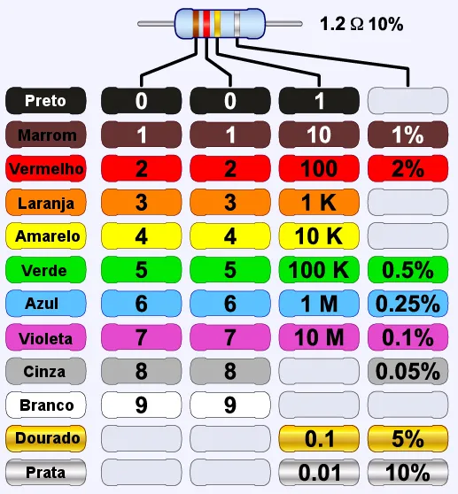
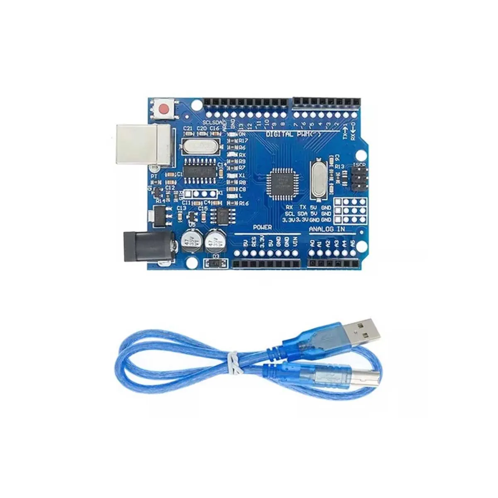
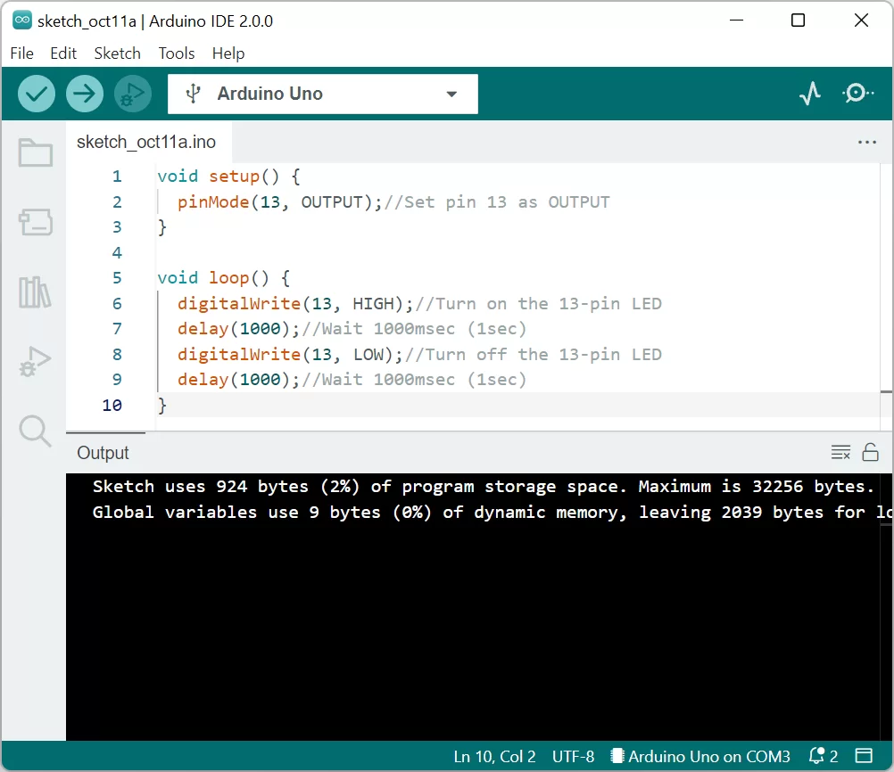
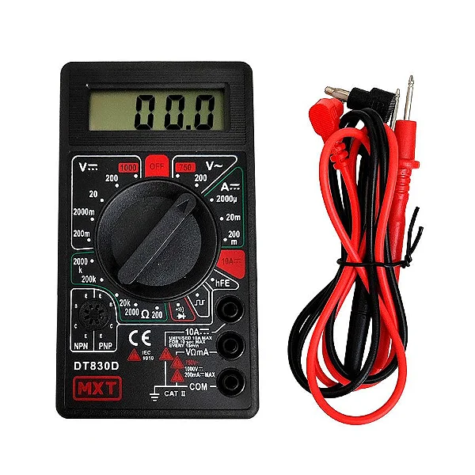

Eletroeletronica
Oque é eletroeletronica?
A eletroeletrônica é a área que combina eletricidade e eletrônica para desenvolver e aplicar tecnologias em sistemas e dispositivos. Ela abrange desde circuitos simples até equipamentos avançados, como computadores, sistemas de automação, e eletrodomésticos. É essencial para a criação, controle e manutenção de soluções tecnológicas no nosso dia a dia.
Código de cores dos resistores
Os resistores são componentes essenciais em circuitos elétricos, usados para limitar o fluxo de corrente. Seus valores de resistência, medidos em ohms (Ω), são indicados por faixas coloridas em seu corpo. Esse padrão visual segue um código de cores padronizado, que torna a identificação simples e eficiente.
Diodo de Luz
O LED é um componente eletrônico que emite luz ao ser atravessado por uma corrente elétrica. É eficiente, durável e amplamente usado em iluminação, telas e indicadores, devido ao seu baixo consumo de energia e variedade de cores.
Diodo de 7 segmentos
O display de 7 segmentos é formado por 7 barras que formam um numero 8, que permiter mostrar numeros do 0 ao 9, um exemplo dele é os marcadores de placar de partidas de volei ou basquete, que é utilizado este tipo de display..
Tinkercad
O Tinkercad é uma ferramenta online gratuita que permite criar projetos em 3D, simular circuitos eletrônicos e programar dispositivos. Intuitivo e acessível, é amplamente usado por estudantes, professores e makers para aprender e desenvolver ideias de forma prática e criativa.
Placa Arduino
A placa Arduino é um dispositivo eletrônico que funciona como um microcontrolador programável. Ela é usada para desenvolver projetos que combinam eletrônica e programação, como sistemas automatizados, robótica e dispositivos IoT. Simples e versátil, é ideal para iniciantes e profissionais.
IDE no Arduino
A IDE do Arduino é um software usado para programar placas Arduino. Ele permite escrever, editar e carregar códigos (sketches) para o microcontrolador de forma simples
Entrada analógica no Arduino
A entrada analógica no Arduino permite ler sinais variáveis de sensores, como temperatura ou luz. Ela converte uma tensão de 0 a 5V em um valor numérico entre 0 e 1023, permitindo monitorar mudanças contínuas no ambiente.
Entrada digital no Arduino
A entrada digital no Arduino é usada para ler sinais binários, ou seja, valores que podem ser apenas "ligado" (1) ou "desligado" (0). Os pinos digitais do Arduino podem ser conectados a interruptores, botões ou outros dispositivos que enviam esses dois estados
Saida analógica no Arduino
A saída analógica no Arduino, também conhecida como PWM, permite controlar dispositivos como LEDs, motores e outros componentes com intensidade variável,Isso permite controlar a intensidade de LEDs, a velocidade de motores e outros dispositivos, criando variações contínuas, como se fosse uma voltagem analógica.
Saida digital no Arduino
A saída digital no Arduino é usada para controlar dispositivos que podem estar "ligados" ou "desligados", como LEDs e motores. Quando um pino digital é configurado como saída, ele pode enviar sinais de 5V ou 0V, permitindo acionar ou desligar componentes conectados ao Arduino.
Multimetro
Um multímetro é um instrumento de medição usado para testar diferentes parâmetros elétricos, como tensão (voltagem), corrente elétrica e resistência. Ele pode ser analógico ou digital e é essencial em projetos de eletrônica e manutenção elétrica. Com ele, é possível verificar se os componentes estão funcionando corretamente, medir a bateria de um dispositivo, ou diagnosticar problemas em circuitos.
